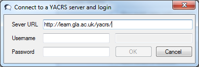
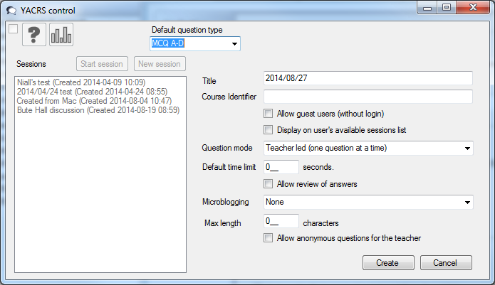
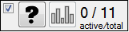

YACRSControl
Teacher documentation
basic_yacrs_student_instructions_v2.doc
Download
- Windows version 1.0.2. (40 kB, this should work on modern versions of Windows with .NET installed.)
Unzip and double click on YACRScontrol.exe to run. It shoulds run from a USB drive attached to standard lecture theatre computers.
- Mac version (0.4) Install the Mono Framework for Mac first. (There
is a significant delay (several minutes) at one point the first time
this is run on a new computer, so test it before using it infront of a class.)
- Mac version (version 1.0 beta 1)
Instructions
You
need to connect to the web server running YACRS to use YACRSControl -
the URL at the University of Glasgow is https://learn.gla.ac.uk/yacrs/
- this needs to be typed precisely with the https:// prefix and
trailing / in the current release. Type in your GUID and password
to login.

Once logged in, click on the "New session" button:

- Select
the 'question type' - With YACRSControl only very generic selections
are appropriate, and the two current options are A-D or A-E.
- Give
the session a title - the default is the date, however sessions can be
restarted, so a course name is probably more appropriate.
- A course identifier can be added to automatically being in a classlist - this is the identifier from the course catalog
, e.g. COMPSCI1001. Classlists come from the feed that is used to
autoenrol students in Moodle, and may be up to 24 hours behind
registrations in MyCampus.
- You can opt to allow guest users, the default is to require a login with a GUID.
- If
you tick the "Display on user's available sessions list" the students
enrolled in the session will see a link when they login to YACRS. This
is recomended if you have enrolled students using a classlist
identifier.
- YACRSControl requires the "Teacher Led" (default) question mode.
- Deafult
time limit allows you to set a default period for qustions being
available - the teacher can always close a question early. 0 leaves it
fully under the teacher's control.
- Microblogging sets up a
"room" within YACRS similar to todaysmeet.com, whic allows
students to have a back channel. If using this with YACRSControl, it is
probably wise to also have a GTA or volunteer student monitoring the
back channel. "Allow anonymous questions for the teacher" is part of
this back channel, and not yet implemented in YACRS so should be left
unchecked.
Once the session settings have been added click the Create button.
To start the session, Click the start session button. YACRSControl will shrink to be a small floating window:

- The ? button starts a new question, and also sends a screenshot of the computer to YACRS.
- The graph button displays a bar chart of the votes for the most recent completed question.
- The
numbers on the right sumarise the users - when no question is active
(as in the picture) this shows how many have interacted recently, and
how many are registered in the session. When a question is active,
the active users count is replaced by a count of responses to the
question.
- Unticking the checkbox onm the left ends the session.